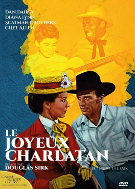
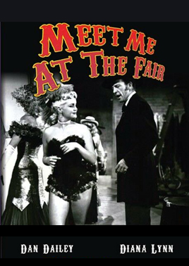
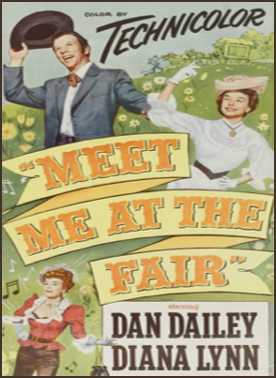

Meet Me At The Fair
Dan Dailey
Hugh O'Brian
Scatman Crothers
Chet Allen
SYNOPSIS
In 1904, Doc Tilbee, medicine show huckster and champion tall-tale teller, gives a ride to a young boy escaped from an orphanage, where bad conditions (the result of political corruption) are being investigated by new appointee Zerelda Wing, who doesn't know that her fiancé - currently standing for re-election - is one of the politicians responsible. Tad wants to stay with his new friend Doc, who is attracted to Zerelda, to the discomfiture of his old flame Clara ... all amid nostalgic musical numbers.
This adaptation, by Irving Wallace and Martin Berkeley, was based on The Great Companions by Gene Markey. The musical numbers were staged by Kenny Williams.
Chet Allen appeared by courtesy of Columbus Boychoir School.
The singing voice of Carole Mathews was dubbed by noted vocalist Jo Ann Greer, who also sang in various films for Rita Hayworth, Kim Novak, Esther Williams, June Allyson and Gloria Grahame.


